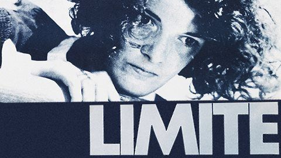
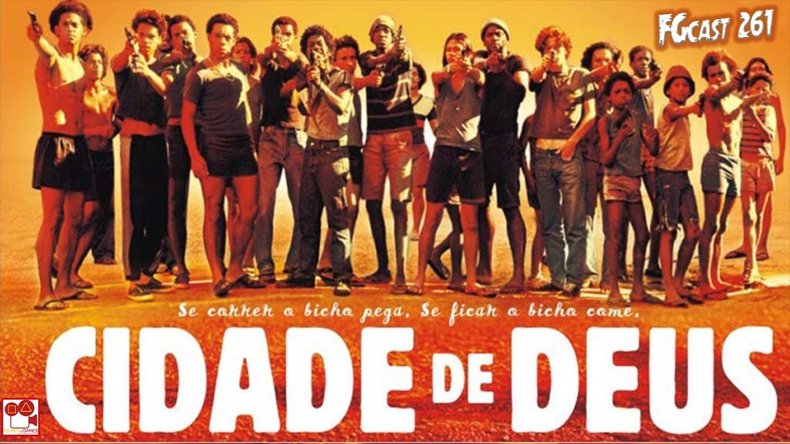

Cinema nacional
4 Curiosidades do cinema brasileiro
O cinema brasileiro tem uma história rica e diversa, com muitas produções aclamadas ambito nacional e internacional. Além disso, existem algumas curiosidades interessantes sobre o cinema brasileiro que muitos podem não conhecer. Neste artigo, vamos explorar quatro curiosidades do cinema brasileiro, desde um dos primeiros filmes produzidos no país até a influência política na indústria cinematográfica.
O clássico "Limite"
"Limite" é um filme brasileiro icônico, que foi lançado em 1931 e é considerado uma obra-prima da era do cinema mudo. O filme foi dirigido por Mário Peixoto, que também escreveu o roteiro, produziu e financiou o filme com seu próprio dinheiro. A história segue três náufragos que estão à deriva em um barco, tentando sobreviver e chegar à costa. "Limite" é notável por sua técnica de montagem não linear, bem como por sua estética surrealista. Apesar de sua importância histórica e artística, o filme não teve grande sucesso comercial na época de seu lançamento.
O sucesso internacional de "Cidade de Deus"
"Cidade de Deus" é um dos filmes brasileiros mais conhecidos internacionalmente. O filme, lançado em 2002, é baseado no livro de mesmo nome de Paulo Lins e é dirigido por Fernando Meirelles e Kátia Lund. A história se passa na favela Cidade de Deus, no Rio de Janeiro, e segue a vida de jovens que crescem em meio à violência e ao crime. O filme foi um sucesso comercial e de crítica, recebendo quatro indicações ao Oscar e ganhando inúmeros prêmios internacionais. Além disso, o sucesso do filme inspirou uma série de televisão e um videogame.
A polêmica cena de Leila Diniz
Leila Diniz foi uma atriz brasileira conhecida por sua atuação em filmes como "Todas as Mulheres do Mundo" (1966) e "Azyllo Muito Louco" (1969). No entanto, ela também é lembrada por uma cena em "Todas as Mulheres do Mundo", em que ela aparece de biquíni na praia com um homem branco e um homem negro. A cena causou polêmica na época, em um momento em que o Brasil ainda era profundamente racista e conservador. No entanto, a cena é considerada um marco na luta contra o racismo e a discriminação no cinema brasileiro.
O impacto do "AI-5" na indústria cinematográfica brasileira
O Ato Institucional nº 5 (AI-5) foi uma lei de 1968 que deu ao governo brasileiro poderes ditatoriais, incluindo a capacidade de censurar a mídia. Isso teve um impacto significativo na indústria cinematográfica brasileira, com muitos filmes sendo censurados ou proibidos durante o período da ditadura militar. Alguns cineastas, como Glauber Rocha, foram forçados a deixar o país e continuar a trabalhar no exterior. No entanto, outros cineastas, como Arnaldo Jabor, encontraram maneiras criativas de contornar a censura e continuar a fazer filmes críticos